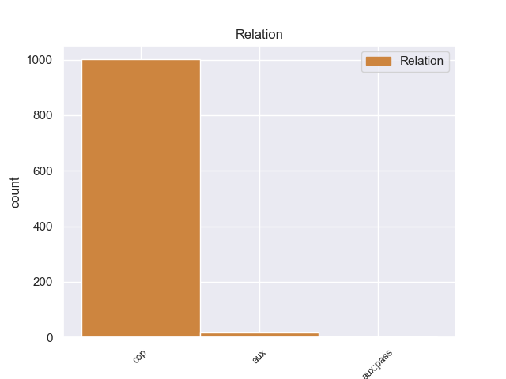
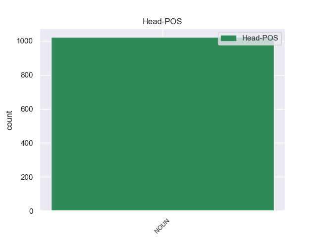
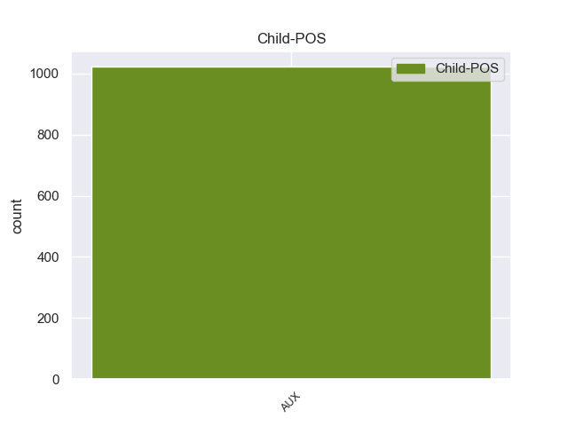

Distribution of features within this leaf



Agreement Rules sorted by frequency.
- When the dependent token is the copula(cop) of the head token, and the head token is NOUN and the dependent token is AUX.
1 On _ _ _ _ 0 _ _ _
2 Monday _ _ _ _ 0 _ _ _
3 I _ _ _ _ 0 _ _ _
4 called _ _ _ _ 0 _ _ _
5 and _ _ _ _ 0 _ _ _
6 again _ _ _ _ 0 _ _ _
7 it _ _ _ _ 0 _ _ _
8 was be AUX VBD Mood=Ind|Number=Sing|Person=3|Tense=Past|VerbForm=Fin 13 cop 13:cop _
9 a _ _ _ _ 0 _ _ _
10 big _ _ _ _ 0 _ _ _
11 to _ _ _ _ 0 _ _ _
12 - _ _ _ _ 0 _ _ _
13 do do NOUN NN Number=Sing 0 _ _ _
14 to _ _ _ _ 0 _ _ _
15 find _ _ _ _ 0 _ _ _
16 anyone _ _ _ _ 0 _ _ _
17 who _ _ _ _ 0 _ _ _
18 knew _ _ _ _ 0 _ _ _
19 anything _ _ _ _ 0 _ _ _
20 about _ _ _ _ 0 _ _ _
21 it _ _ _ _ 0 _ _ _
22 . _ _ _ _ 0 _ _ _
1 Brickell _ _ _ _ 0 _ _ _
2 Honda _ _ _ _ 0 _ _ _
3 has have AUX VBZ Mood=Ind|Number=Sing|Person=3|Tense=Pres|VerbForm=Fin 8 aux 8:aux _
4 been _ _ _ _ 0 _ _ _
5 the _ _ _ _ 0 _ _ _
6 best _ _ _ _ 0 _ _ _
7 buying _ _ _ _ 0 _ _ _
8 experience experience NOUN NN Number=Sing 0 _ _ _
9 in _ _ _ _ 0 _ _ _
10 the _ _ _ _ 0 _ _ _
11 world _ _ _ _ 0 _ _ _
12 . _ _ _ _ 0 _ _ _
1 I _ _ _ _ 0 _ _ _
2 moved _ _ _ _ 0 _ _ _
3 into _ _ _ _ 0 _ _ _
4 the _ _ _ _ 0 _ _ _
5 Tanglewood _ _ _ _ 0 _ _ _
6 Apartments _ _ _ _ 0 _ _ _
7 in _ _ _ _ 0 _ _ _
8 late _ _ _ _ 0 _ _ _
9 2008 _ _ _ _ 0 _ _ _
10 and _ _ _ _ 0 _ _ _
11 it _ _ _ _ 0 _ _ _
12 's be AUX VBZ Mood=Ind|Number=Sing|Person=3|Tense=Pres|VerbForm=Fin 16 aux:pass 16:aux:pass _
13 been _ _ _ _ 0 _ _ _
14 a _ _ _ _ 0 _ _ _
15 refreshing _ _ _ _ 0 _ _ _
16 change change NOUN NN Number=Sing 0 _ _ _
17 . _ _ _ _ 0 _ _ _
Disagree Examples:
1 " _ _ _ _ 0 _ _ _
2 Wait _ _ _ _ 0 _ _ _
3 , _ _ _ _ 0 _ _ _
4 wait _ _ _ _ 0 _ _ _
5 , _ _ _ _ 0 _ _ _
6 is be AUX VBZ Mood=Ind|Number=Sing|Person=3|Tense=Pres|VerbForm=Fin 9 cop 9:cop _
7 this _ _ _ _ 0 _ _ _
8 50 _ _ _ _ 0 _ _ _
9 questions question NOUN NNS Number=Plur 0 _ _ _
10 ? _ _ _ _ 0 _ _ _
11 " _ _ _ _ 0 _ _ _
12 asked _ _ _ _ 0 _ _ _
13 Bush _ _ _ _ 0 _ _ _
14 . _ _ _ _ 0 _ _ _
1 Hiller _ _ _ _ 0 _ _ _
2 replied _ _ _ _ 0 _ _ _
3 : _ _ _ _ 0 _ _ _
4 " _ _ _ _ 0 _ _ _
5 No _ _ _ _ 0 _ _ _
6 , _ _ _ _ 0 _ _ _
7 it _ _ _ _ 0 _ _ _
8 's be AUX VBZ Mood=Ind|Number=Sing|Person=3|Tense=Pres|VerbForm=Fin 10 cop 10:cop _
9 four _ _ _ _ 0 _ _ _
10 questions question NOUN NNS Number=Plur 0 _ _ _
11 of _ _ _ _ 0 _ _ _
12 four _ _ _ _ 0 _ _ _
13 leaders _ _ _ _ 0 _ _ _
14 in _ _ _ _ 0 _ _ _
15 four _ _ _ _ 0 _ _ _
16 hot _ _ _ _ 0 _ _ _
17 spots _ _ _ _ 0 _ _ _
18 . _ _ _ _ 0 _ _ _
19 " _ _ _ _ 0 _ _ _
20 . _ _ _ _ 0 _ _ _
21 . _ _ _ _ 0 _ _ _
22 . _ _ _ _ 0 _ _ _
1 The _ _ _ _ 0 _ _ _
2 biggest _ _ _ _ 0 _ _ _
3 threat _ _ _ _ 0 _ _ _
4 Israel _ _ _ _ 0 _ _ _
5 faces _ _ _ _ 0 _ _ _
6 is be AUX VBZ Mood=Ind|Number=Sing|Person=3|Tense=Pres|VerbForm=Fin 10 cop 10:cop _
7 not _ _ _ _ 0 _ _ _
8 from _ _ _ _ 0 _ _ _
9 conventional _ _ _ _ 0 _ _ _
10 armies army NOUN NNS Number=Plur 0 _ _ _
11 but _ _ _ _ 0 _ _ _
12 from _ _ _ _ 0 _ _ _
13 the _ _ _ _ 0 _ _ _
14 asymmetrical _ _ _ _ 0 _ _ _
15 tactics _ _ _ _ 0 _ _ _
16 of _ _ _ _ 0 _ _ _
17 Palestinian _ _ _ _ 0 _ _ _
18 national _ _ _ _ 0 _ _ _
19 liberation _ _ _ _ 0 _ _ _
20 movements _ _ _ _ 0 _ _ _
21 . _ _ _ _ 0 _ _ _
1 That _ _ _ _ 0 _ _ _
2 was be AUX VBD Mood=Ind|Number=Sing|Person=3|Tense=Past|VerbForm=Fin 4 cop 4:cop _
3 80 _ _ _ _ 0 _ _ _
4 weeks week NOUN NNS Number=Plur 0 _ _ _
5 to _ _ _ _ 0 _ _ _
6 begin _ _ _ _ 0 _ _ _
7 with _ _ _ _ 0 _ _ _
8 , _ _ _ _ 0 _ _ _
9 and _ _ _ _ 0 _ _ _
10 there _ _ _ _ 0 _ _ _
11 were _ _ _ _ 0 _ _ _
12 other _ _ _ _ 0 _ _ _
13 training _ _ _ _ 0 _ _ _
14 periods _ _ _ _ 0 _ _ _
15 thrown _ _ _ _ 0 _ _ _
16 in _ _ _ _ 0 _ _ _
17 as _ _ _ _ 0 _ _ _
18 well _ _ _ _ 0 _ _ _
19 . _ _ _ _ 0 _ _ _
1 I _ _ _ _ 0 _ _ _
2 had _ _ _ _ 0 _ _ _
3 an _ _ _ _ 0 _ _ _
4 interesting _ _ _ _ 0 _ _ _
5 conversation _ _ _ _ 0 _ _ _
6 with _ _ _ _ 0 _ _ _
7 a _ _ _ _ 0 _ _ _
8 middle _ _ _ _ 0 _ _ _
9 - _ _ _ _ 0 _ _ _
10 aged _ _ _ _ 0 _ _ _
11 taxi _ _ _ _ 0 _ _ _
12 driver _ _ _ _ 0 _ _ _
13 who _ _ _ _ 0 _ _ _
14 used _ _ _ _ 0 _ _ _
15 to _ _ _ _ 0 _ _ _
16 live _ _ _ _ 0 _ _ _
17 in _ _ _ _ 0 _ _ _
18 Fallujah _ _ _ _ 0 _ _ _
19 and _ _ _ _ 0 _ _ _
20 is be AUX VBZ Mood=Ind|Number=Sing|Person=3|Tense=Pres|VerbForm=Fin 23 cop 23:cop _
21 now _ _ _ _ 0 _ _ _
22 at _ _ _ _ 0 _ _ _
23 relatives relative NOUN NNS Number=Plur 0 _ _ _
24 in _ _ _ _ 0 _ _ _
25 Amiriya _ _ _ _ 0 _ _ _
26 , _ _ _ _ 0 _ _ _
27 Baghdad _ _ _ _ 0 _ _ _
28 . _ _ _ _ 0 _ _ _